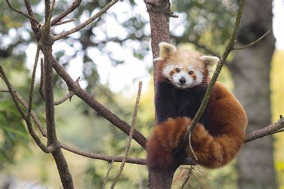

Top 5 Nature Reserves in Bhutan
Bhutan, known for its pristine natural beauty and commitment to environmental conservation, is home to several breathtaking nature reserves. These protected areas offer visitors an opportunity to explore the country's diverse flora and fauna while immersing themselves in stunning landscapes.
"In nature, nothing is perfect and everything is perfect. Trees can be contorted, bent in weird ways, and they're still beautiful."
- Alice Walker
Here are the top five nature reserves in Bhutan that should be on every nature lover's bucket list:
- Jigme Dorji National Park
- Jigme Singye Wangchuck National Park
- Sakteng Wildlife Sanctuary
- Thrumshingla National Park
- Phrumsengla National Park